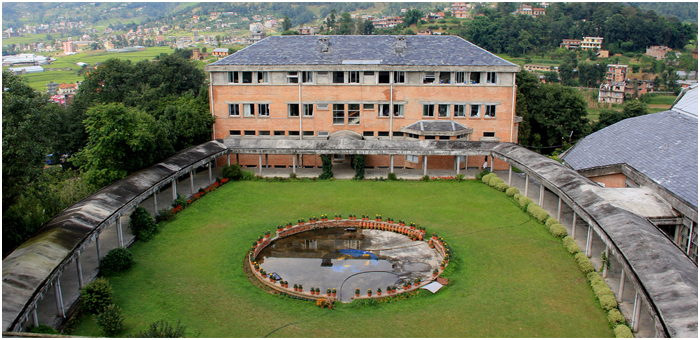
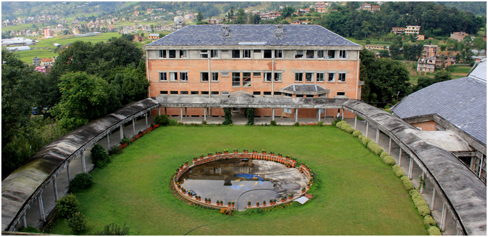
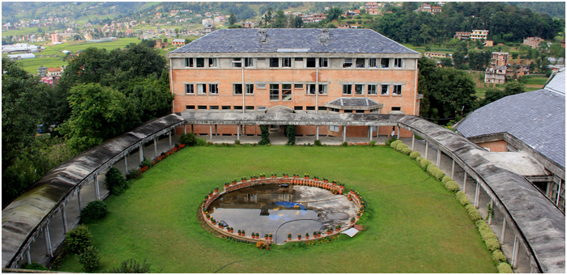
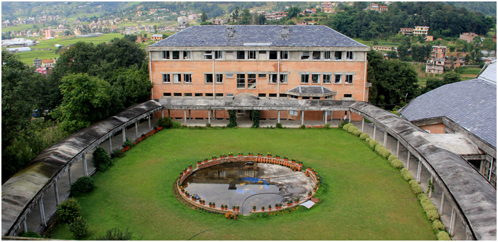

This website includes the information about WebGIS module. The maps in geoserver containing administrative bboundary, district population, landcover, and baselayer are linked in the webpage.
Kathmandu University is an autonomous, not-for-profit, non - government institution dedicated to maintain high standards of academic excellence. It is committed to develop leaders in professional areas through quality education.
It is located in a mountainous landscape in Dhulikhel Municipality about 30 kilometers east of Kathmandu (KTM) having round-the-year pleasant climate and panoramic Himalayan Views. KU had a very modest start from a rented building at Tangal, Kathmandu. Now, it has been able to create a built up space of 46,846 square meters.
Geomatic engineering is fast growing discipline (that focuses on spatial information, i.e. information that has a location). The speed of development in the field is same as of Information Technology. Geomatics Engineers apply engineering principles to spatial information and implement relational data structures involving measurement sciences, thus using Geomatics as Spatial Engineers. Geomatics engineers manage local, regional and global spatial data for infrastructure development.
Web GIS is a type of distributed information system, comprising at least a server and a client, where the server i s a GIS server and the client is a web browser, desktop application, or mobile application.
At the early stage, spatial database was imported in postgres with postgis extension and certain query were performed to relate two tables. The database of nepal district and the corresponding population were imported in geoserver. Various scripts were used to make a thematic map showing the population density of Nepal. The raster image in .tiff format was also used in geoserver in which the land cover of nepal was classified in the map. The URL was studied to make legend of the map in geoserver.
Personal Information |
|---|
|